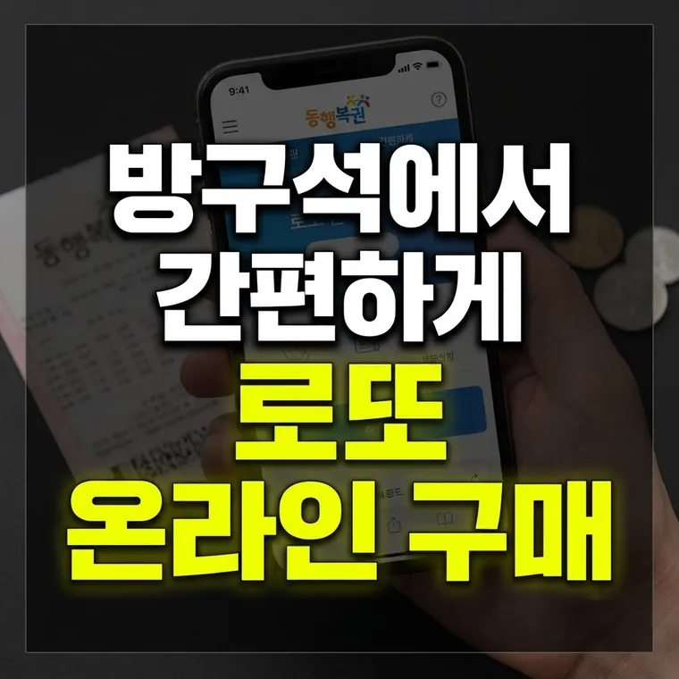

인터넷 동행복권 사이트에서 로또 구매하는 방법 및 구매 한도·결제 방식 완벽 가이드
인터넷으로 로또를 사려면 회원가입과 본인인증 후 예치금을 충전해야 하고, 신용카드는 쓸 수 없습니다. 인터넷 구매는 한 회차에 1인당 최대 5,000원(5게임)까지입니다.

온라인 로또 구매 시스템의 이해와 필요성
오프라인 판매점을 찾아가지 않고 집이나 이동 중에도 편하게 로또 복권을 구매할 수 있다는 점은 인터넷 구매의 큰 장점입니다. 하지만 처음 온라인 구매를 시도하는 분들 중 상당수가 일반 쇼핑몰처럼 신용카드 결제를 찾다가 당황하곤 합니다.
사행성 조장과 무분별한 신용 구매를 막기 위해 복권 구매에는 신용카드 결제가 금지되어 있습니다. 따라서 동행복권 공식 홈페이지를 통한 온라인 구매 시에는 사전 예치금 충전과 회차별 한도 규정을 정확히 알고 계셔야 시행착오를 줄일 수 있습니다.
예치금 충전 및 결제 방식의 실제 과정
온라인 로또 구매를 위해 가장 먼저 거쳐야 하는 단계는 동행복권 공식 웹사이트 회원가입 및 본인인증입니다. 가입 완료 후에는 로또를 구매할 결제 수단인 '예치금'을 충전해야 합니다.
- 가상계좌 입금 방식: 예치금 충전 화면에서 원하는 금액(예: 5,000원, 10,000원 등)을 선택하면 개인 전용 가상계좌번호가 발급됩니다. 해당 계좌로 본인의 시중은행 계좌를 통해 뱅킹 앱으로 이체하면 예치금 반영이 완료됩니다.
- 신용카드 결제 불가: 신용카드나 간편결제 옵션은 제공되지 않으며, 가상계좌 입금이나 케이뱅크 계좌를 연결하는 간편충전으로 예치금을 채웁니다.
- 간편 뱅킹 활용: 계좌이체 과정이 번거로울 수 있으므로 모바일 뱅킹 앱의 간편 송금 기능을 미리 연결해 두시면 매주 손쉽게 예치금을 충전할 수 있습니다.
오프라인과 다른 온라인 구매 한도 및 제한 조건
처음 온라인 로또를 구매할 때 가장 많이 헷갈려하시는 부분이 바로 '구매 가능 금액'입니다. 오프라인 로또 판매점에서는 1인당 1회 최대 10만 원까지 구매가 가능하지만, 온라인 동행복권 사이트에서는 규정이 다릅니다.
- 회차당 최대 5,000원 제한: 인터넷 구매 시 1인당 1회차에 최대로 살 수 있는 금액은 5,000원(5게임)으로 제한되어 있습니다. 이는 복권 과몰입을 예방하기 위한 제도적 장치입니다.
- PC 및 모바일 기기 합산 적용: PC 접속이나 모바일 접속 구분 없이 같은 계정 기준으로 회차당 5,000원 한도가 적용됩니다.
- 구매 가능 시간: PC로는 매일 오전 6시부터 밤 12시까지 구매할 수 있고, 추첨일인 토요일은 오후 8시에 판매가 마감됩니다. 모바일은 평일(월~금)에만 구매할 수 있도록 운영 중이니, 이용 전에 동행복권 공지에서 최신 시간을 확인하세요.
실전 이용 시 빈번히 발생하는 오류 및 해결 체크리스트
실제 온라인으로 구매를 진행하다 보면 접속 중 끊김이 생기거나 결제 오류 메시지가 뜨는 경우가 있습니다. 이럴 때는 다음 항목들을 점검해 보시는 것이 좋습니다.
- 구매 확인 미완료 시 예치금 차감: 간혹 번호를 선택하고 구매 완료 버튼을 누르다 통신 에러가 생기면 예치금만 차감되고 복권 발급이 안 되었는지 불안해할 수 있습니다. 마이페이지의 '구매/당첨내역' 메뉴에서 해당 회차의 복권이 정상적으로 생성되었는지 반드시 확인하세요.
- 예치금 환불: 사용하지 않고 남은 예치금은 본인 명의의 계좌로 환불(출금) 신청이 가능합니다. 다만 입력한 계좌와 회원 명의가 일치해야 정산이 진행됩니다.
- 브라우저 팝업 차단 해제: 번호 선택용 구매 창이 별도의 팝업창으로 뜨는 경우가 많으므로 브라우저 설정에서 동행복권 사이트의 팝업 차단을 해제해 두어야 구매 화면이 열립니다.
예치금 충전부터 구매 확인까지 한 번만 순서를 익혀 두면 매주 어렵지 않게 이용할 수 있습니다. 구매 한도 안에서 소액으로 가볍게 즐기는 것이 기본입니다.
· 온라인 로또 구매는 신용카드가 불가능하며, 가상계좌 입금(또는 케이뱅크 간편충전)으로 충전한 예치금으로만 진행됩니다.
· 오프라인(1인 1회 10만 원)과 달리 인터넷 구매는 회차당 1인 5,000원(5게임) 한도가 적용됩니다.
· 구매 후에는 마이페이지의 구매/당첨내역에서 복권 번호가 정상 발급되었는지 다시 확인하는 습관이 필요합니다.
이 글의 기준과 예시는 2026년 10월 기준입니다. 법령이나 제도가 바뀌면 내용이 달라질 수 있으니, 신청·신고·계약 전에는 해당 기관에서 최신 기준을 확인하세요. 계산 결과와 설명은 참고용입니다.
🔮 다음 글 예고
다음 글에서는 독립시행이 무엇인지, 로또 번호 추첨에 적용되는 확률 통계의 핵심 법칙을 다룹니다.